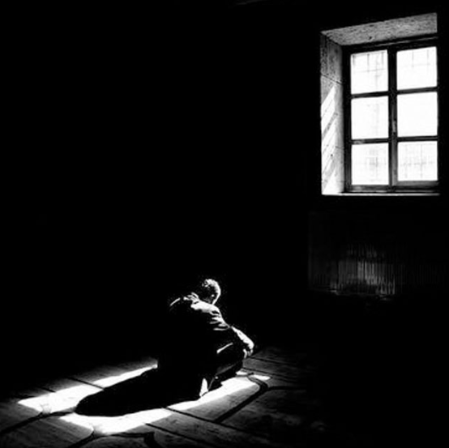
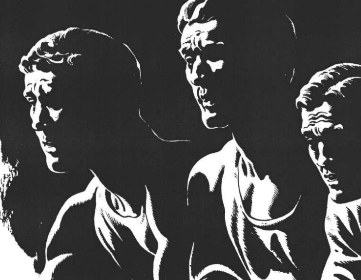
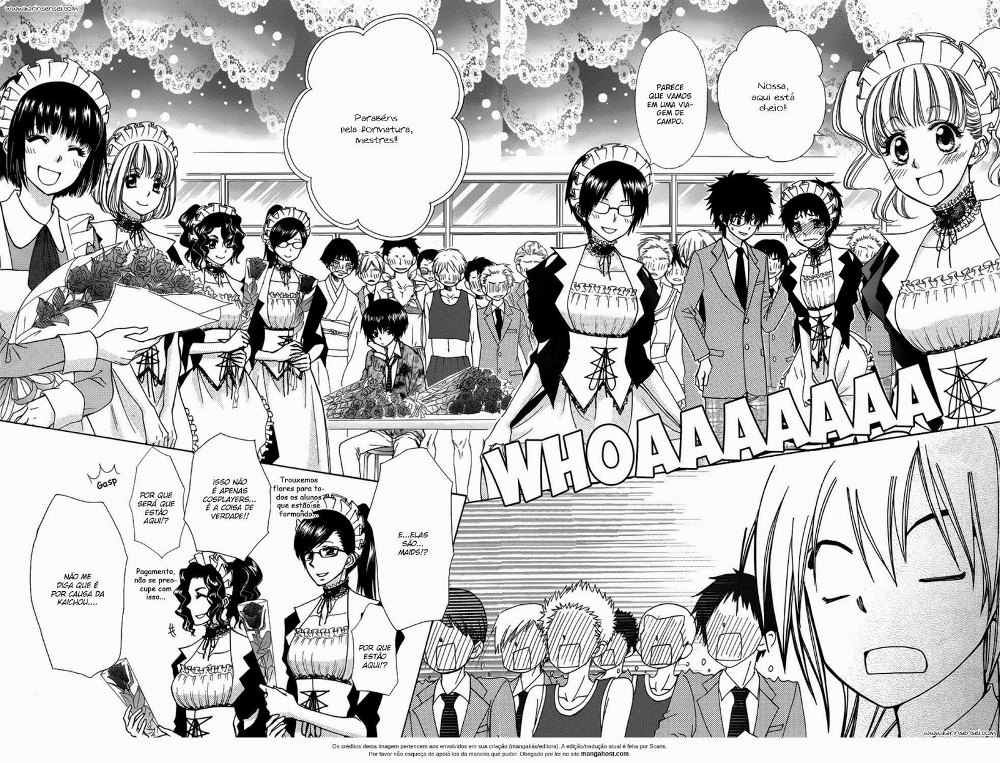
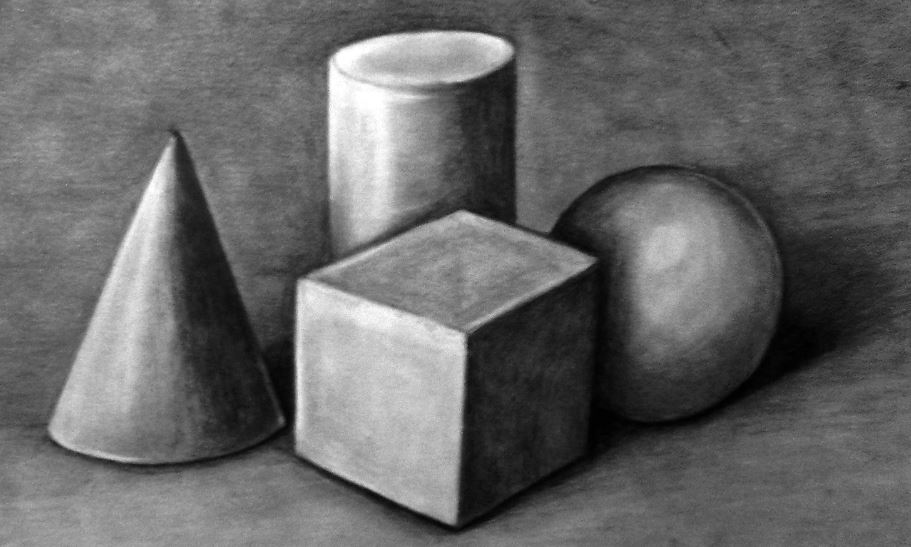

LUZ
E SOMBRA
Explore o universo das cores, suas propriedades físicas, percepção visual e aplicações na arte, design e tecnologia.
Explore o universo das cores, suas propriedades físicas, percepção visual e aplicações na arte, design e tecnologia.

Quando falamos de Luz e sombra percebemos que as cores também possuem essa variação. Ao colocar
um objeto em cima de uma mesa e colocar a luz por cima você consegue vizualizar então ao redor
uma sombra
da qual
foi formada a partir daquele ponto focal.
Porém, se estamos com um objeto verde, a sombra não vai estar verde, e sim escura. Pois a teoria
de LUZ e SOMBRA
segue um conceito diferente da relaidade ela pode ser utilizada de uma forma mais dinâmica. A
técnica de luz e sombra era muito ultiliada
por pintores do Renascimento.
Sabe-se, desde os Impressionistas, que o preto não existe na natureza e que, consequentemente, quando se utiliza o preto para promover as sombras e uma imagem, ela parecerá artifi cial. A melhor sombra é promovida através da mistura da cor com a sua complementar. Deste modo, se uma cor azul ciano necessita uma sombra para causar a ilusão de tridimensionalidade, a melhor cor para este efeito não é o preto e sim o vermelho, sua cor complementar. Isto acontece porque a mistura do ciano com o vermelho, cores complementares, resulta em uma extensa paleta de Tons-Rompidos.

Existem cinco categorias de luz e sombra onde conseguimos ter melhor maneira de preencher quase todas as
condições da luz.
Categoricamente são elas:
- Luz de uma Só direção
- Luz de uma Só direção de cima para Esquerda
- Luz de uma Só direção de cima para Direita
- Luz em duas direções
- Luz de Duas direções Num exterior
Conseguimos detectar também duas fontes de Luz onde temos em um mesmo cenário a luz principal e a Luz
secundária, assim como nas cores elas conseguem estar em harmonia e quando não utilizadas da forma
correta não tráso meso resutado.
A intensidade da Luz e da Sombra trabalham no contraste de "Calor", mas, muitas vezes a Luz principal
muitas vezes ten de a não iluminar necessáriamente uma área específica.
O efeito de luz e sombra é muito utilizado em mangas e quadrinhos até hoje para a manipulação dos
desenhos e também para melhor desenvolvimento da historia, do cenário e dos próprios personagens.
Abaixo, temos um exemplo de um manga que, particularmente, gosto bastante da história, pois, na
narrativa temoos
a personagem principal que é muito dedicada aos estudos, e por mais que possua uma aparencia mais fria,
no fundo
tem um coração bondoso e preocupado.

Viveu entre 1452 e 1519. Foi uma das principais figuras do chamado Renascimento italiano e produziu obras que são bastante conhecidas e imitadas, como a “Monalisa”
Foi o gênio máximo do Renascimento. Embora famoso pela pintura na Capela Sistina, sua verdadeira paixão era a escultura. Ele considerava a escultura a forma de arte mais nobre
Foi um dos maiores expoentes do pós-impressionismo, mas viveu uma vida marcada por dificuldades financeiras e psicológicas. Ele começou a pintar apenas aos 27 anos,
CRIE SUA MUTAÇÃO
Objetivo: Busque algo que você possa utilizar da mutação cromática na prática, ou seja, busque um
material
uma pintura ou ate mesmo um objeto para que através da COR ou ILUMINAÇÃO você possa fazer uma
alteração.
Faça alteração das cores originais para criar efeitos visuais diferentes, mudar emoções da cena ou
transmitir outra mensagem visual.
